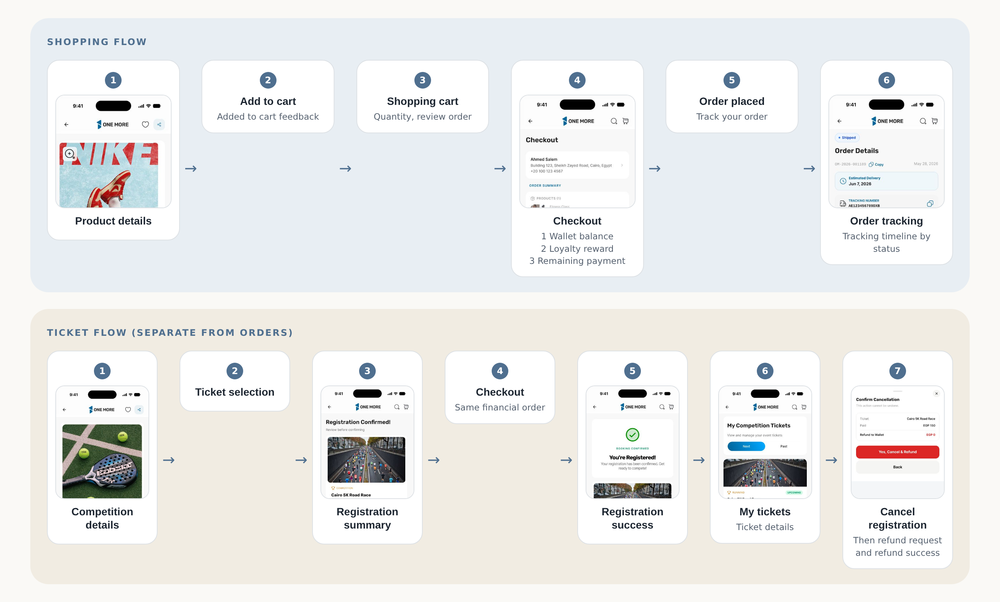
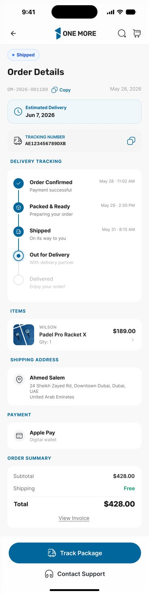
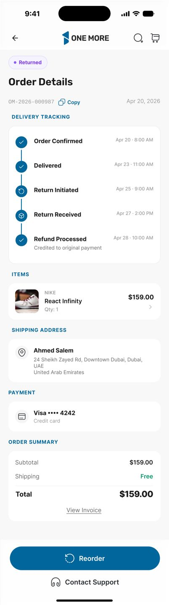
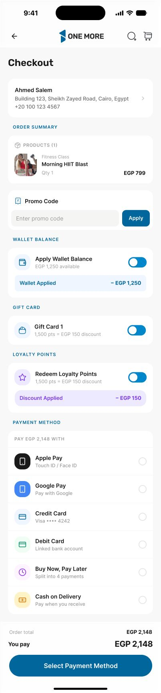
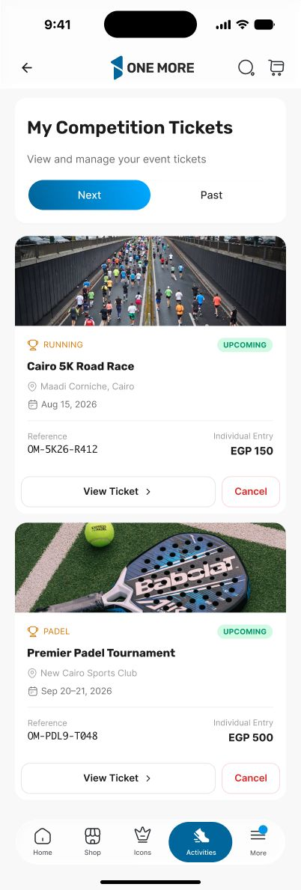
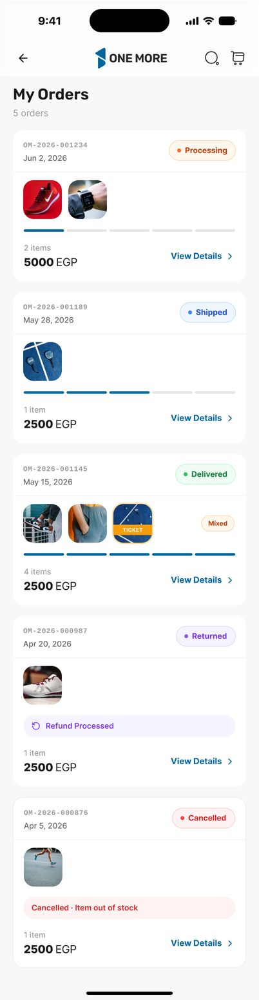

What this covers
RoleProduct Manager and Product Designer. I defined and documented the product and designed the screens.
MarketEgypt. Prices are in EGP.
Launch statusLive on the store.
TypeFreelance project, not tied to a company.
How a user moves through the app

Order tracking, by status


Decisions I made
Gift card to wallet, one journey
Buy gift card
Receive code
RedeemSeparate journey from buying
Credit becomes wallet balanceNo separate gift card balance
Spend wallet balance
Kept separate on purpose
WishlistStores products
FollowingStores brands and ambassadors
TicketsNot shopping orders
Ticket refundsNot product returns
Loyalty pointsA reward currency, not cash
WalletThe balance hub
Where these decisions show up in the screens



Activities is a parent moduleGym memberships, classes, courts booking and competitions are four independent child modules. Each has its own documentation and booking flow, and I did not assume they share the same logic. Guests can browse. Signing in is required before booking.
Redeemed gift cards become wallet balanceWallet is the central balance hub. Once a gift card is redeemed, its value is wallet balance, with no separate stored balance. Buying and redeeming are separate journeys.
Loyalty points are not cashPoints are a reward currency, redeemed for rewards that apply at checkout under their conditions. If the wallet covers the full amount, no other payment method is needed.
Wishlist and following are differentWishlist stores products. Following stores brands and ambassadors.
Tickets are separate from ordersTickets belong to activities and competitions. Ticket cancellation and refunds are documented apart from product returns and refunds.
No duplicate features, no silent changesA feature lives in one module. Changes to the approved architecture are discussed for impact first, and cycle numbers are not renumbered silently.
Design direction
Colors from the established identity
Off-white#F8F8F6
Charcoal#111111
White cards#FFFFFF
One More Blue#00669B
Direction
MinimalPremiumCleanModernSport-orientedEditorial where it fits
Avoided
GradientsNeon colorsGaming lookGlassmorphismExcess decoration
I designed the screens. They follow one established identity: reusable components, consistent cards and spacing, clear primary and secondary actions, and accessible states. The latest screens are the visual reference for navigation and layout.
How each cycle is documented
The 14 sections in every cycle document
ObjectiveUser storiesEntry pointsMain flowInformation architectureScreens checklistFeaturesBusiness rulesEdge casesEmpty statesSuccess statesError statesLoading statesAnalytics events
Every cycle gets the same 14-section document, including empty, success, error and loading states, so developers get the same structure each time.
Product vision
- Icons: directories of athletes, coaches, celebrities and influencers, each with a profile that users can follow (shown in the screens above).
- Commerce: discovery, shopping, cart, wishlist, checkout, payments, orders, returns and refunds, gift cards.
- Sports experiences: activities, competitions, courts booking, classes, gym memberships, tickets, brands, ambassadors, following and loyalty.
- Built to take new features without major architecture changes.
- The More menu groups the wallet summary, quick access to orders, tickets, wishlist, gift cards, following and notifications, and settings.